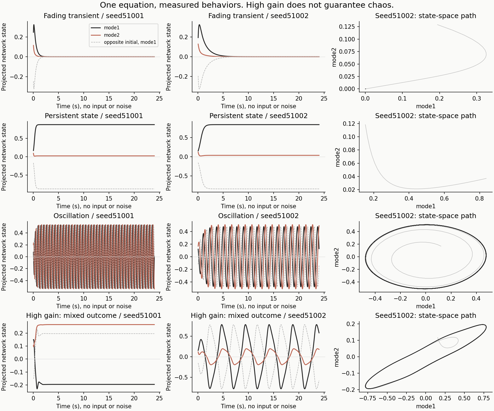

One recurrent rule
Change a small part of the connections. Watch what reaches the model’s input.
32.000 s
Loading…
1 · Native input
2 · Network response
With structured connections
Structure removed
3 · Spatial amplitude driver
4 · Observed input, after voltage and STFT
Selected contact · structured in black, control in gray
Pretraining handoff
Prepared as an optional experiment beside the frozen native3 baseline. The package contains generation commands, pinned recipes, collector, reader/packer verification and integration notes. No training was launched; transfer benefit remains untested.
The verified generator handoff is prepared separately in the project workspace.
What is fixed, and what changes?
The equation is τ dx/dt = −x + (gJ + QAQᵀ) tanh(x) + u(t). The control removes QAQᵀ. Each network has64 state coordinates and two construction directions inQ. The driver also includes the existing renderer’s local activity. Colors share fixed±3 limits; missing grid locations are gray. This is an engineered prior, not an identified cortical circuit.
How much of the change reaches HGA?
Relative RMS change between matched on/off arms. Each column uses its own structured-arm RMS as denominator; these are not variance-explained fractions. Carrier and source-map draws are identical. They measure this intervention, not latent recoverability or training benefit.
| Connections | Network state | HGA core projection | Observed HGA bins |
|---|
Research basis
Mastrogiuseppe & Ostojic (2018) motivates studying structured connectivity in random recurrent networks. Hennequin et al. (2014) demonstrates that stable, nonchaotic networks can generate rich transients. These constructions are engineering examples, not replications of their complete models or equations identified from speech cortex. Source ledger and limits.
Separate test: turn input and noise off
Fading transients, persistent states and oscillations occurred in both tested seeds. The high-gain setting gave mixed outcomes; neither structured example establishes chaos. These source-only tests are separate from the continuously driven recordings above.

| Construction | Seed | Late fluctuation RMS | Finite-time expansion /s |
|---|